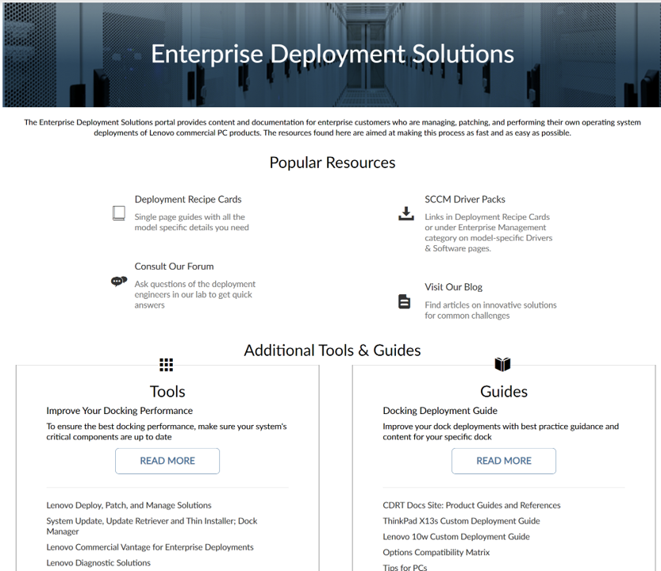

Enterprise Deployment Solutions portal
One page on Lenovo Support that gathers every deployment resource.
Inventory
- What it is
- A landing page on Lenovo Support built for IT administrators who deploy large numbers of Think products.
- Covers
- Deployment Recipe Cards, Hardware Driver Packs, Lenovo tools, and resources for deployment engineers.
- Get there
- bit.ly/LNVTDRC
Why start here
Lenovo supports a broad portfolio of products, and the content that goes with them can be hard to find when you need it. The Enterprise Deployment Solutions portal pulls everything related to deploying and configuring Think products onto one page on Lenovo Support, so it works as your single starting point.
Bookmark it alongside the CDRT Docs Site. The portal is where you go for content tied to a model (packs, cards, downloads); the docs site is where you go for product guides and reference material.

What you will find there
- Deployment Recipe Cards: the key deployment details for a model on a single page.
- Hardware Driver Packs: every driver for one model and one Windows version in one self-extracting file.
- Lenovo tools for administrators, such as Commercial Vantage and Dock Manager.
- Resources for deployment engineers, including links to the documentation, blog and community forum covered in Part 4.